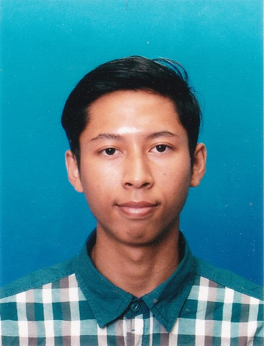

|  | Ezahan Hilmi Bin ZakariaBachelor of Mechatronics Engineering with Honours
|
| Dates | Work |
|---|---|
| Mar 2022 - Present | OFO Tech Sdn. Bhd.
|
| July 2021 - Sep 2021 | Inari Technology Sdn Bhd
|
| 2017 - 2021 | Bachelor of Mechatronic Engineering with Honours |
| 2016 - 2017 | Science Stream Module 2 (Computer Science) |
| 2014-2015 | Malaysian Certificate of Education (SPM) |
| Jan 2022 | Certified Engineer in Computer Vision
|
| Sep 2021 | Mega Java training
|
| Programming | Python, C, C++, Java, Html, PLC |
| Software | AUTOCAD, MATLAB, Arduino IDE, Visual Studio Code, PLC Programming, Proteus, Multisim, Microsoft Office, Catia |
| Technical | Machine Learning, Tensorflow, Keras, Deep Learning, OpenCV, Numpy, YOLO, Team Building, Critical thinking |
| Malay | Fluent in read,written and spoken |
| English | Fluent in read,written and spoken |
| Japanese | Novice in read ,written and spoken |
| Mohd Azraai Bin Mohd Razman Lecturer Phone : +60-176454151 Email : mohdazraai@ump.edu.my |
Ts Suhaimi Bin Puteh Laboratory Instructor Phone : +60-199976162 Email : suhaimiputeh@ump.edu.my |